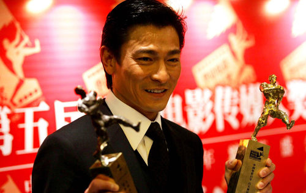

刘德华
1.早年经历2.演艺经历
3.个人生活
早年经历
刘德华出生于香港新界，在家中排行老四，幼时随家人搬到了九龙钻石山的木屋区居住，并和姐弟一起帮助家里打理卖稀饭的生意 [24] 。1973年，刘德华随家人搬入香港蓝田邨第15座14楼 [25] 。刘德华从黄大仙天主教小学毕业后升读可立中学 [26] 。在可立中学读书期间，刘德华积极参加校内学校剧社的表演，在老师杜国威的指导下学习戏剧方面的知识。此外，他还参与包括编剧在内的幕后制作。刘德华在中五会考获得1B3D2E（中文读本A）的成绩。中六上学期后，他到香港电视广播有限公司的艺员训练班受训，从而开始了演艺之路 [27] 。
演艺经历
港剧时代
1981年，刘德华考进第10期无线电视艺员训练班 [28] ；同年，出演个人首部电视剧《江湖再见》，在剧中饰演以贩卖妇女为生的小混混阿龙 [29] ；该剧获得美国电视节电视剧特别奖 [30] 。
1982年，刘德华以甲级成绩从艺员训练班毕业后正式签约TVB [31] ；同年在喜剧《花艇小英雄》中饰演败家仔钱日添；12月，与叶德娴搭档主演时装警匪剧《猎鹰》，凭借卧底警察江大伟一角获得关注 [32] 。
1983年，主演金庸武侠剧《神雕侠侣》，在剧中饰演外貌俊俏、倜傥不羁的杨过 [33] ；该剧在香港播出后取得62点的收视纪录；同年，与黄日华、梁朝伟、苗侨伟、汤镇业组成“无线五虎将” [34] 。
1984年，与赵雅芝合作主演古装武侠剧《魔域桃源》，在剧中饰演资质出众、武功高强的傅青云 [35] ；同年，与梁朝伟共同主演金庸武侠剧《鹿鼎记》，在剧中饰演英明果断的康熙 [36] 。
1985年，在古装武侠剧《杨家将》中饰演饶勇善战的杨六郎 [37] ；同年，TVB向刘德华提出加签五年的合约，刘德华因拒绝而被TVB雪藏400天 [38-39] 。
1986年，在邵逸夫的调解下，刘德华与TVB和解并签下合约；同年，主演古装剧《真命天子》。1988年，在出演了武侠剧《天狼劫》后，刘德华将演艺事业的重心转向影坛 [39] 。
电影时代
1981年，刘德华出演电影处女作《彩云曲》，在片中扮演一个音乐班的学员 [40] 。
1982年，在剧情片《投奔怒海》中饰演美军翻译官祖名，并凭借该片获得第2届香港电影金像奖最佳新演员提名 [40] 。
1983年，与张曼玉搭档主演剧情片《家在香港》，在片中饰演急功近利的青年人亚伦 [41] ；同年，主演动作片《毁灭号地车》，在片中与一个越南少女演绎了一段爱情故事 [42] 。1984年，在爱情片《停不了的爱》中饰演富家公子Eric [43] 。
1985年，在与叶德娴共同主演的剧情片《法外情》中饰演少年得志的青年律师刘志鹏 [44] 。1986年，主演科幻冒险片《魔翡翠》，在片中饰演冒险专家猎鹰一号，这也是他首度出演科幻题材的电影 [45] ；同年，出演喜剧片《最佳福星》，在片中饰演身手矫健的特警组警员蓝保 [46] 。1987年，主演警匪片《肝胆相照》，在片中饰演亦正亦邪的犯罪集团成员阿定 [47] 。
1988年，主演王家卫执导的黑帮片《旺角卡门》，在片中饰演重情重义的江湖混混华仔，并凭借该片获得第8届香港电影金像奖最佳男主角奖提名 [48] ；同年，主演警匪片《猎鹰计划》，在片中饰演具有正义感的警员国华 [49] ；此外，他还再度与叶德娴合作，在剧情片《法内情》中与叶德娴饰演绎了一段母子情 [50] 。1989年，在动作片《至尊无上》中饰演有“亚洲第一快手”之称的陈亚蟹 [51] ；同年，主演剧情片《神行太保》，在片中饰演一名公正、能干、勇敢的太保；此外，他还主演了动作片《人海孤鸿》，在片中饰演没有接受过良好教育的古惑仔沙士 [52] ；12月，与周润发共同主演动作片《赌神》，在片中饰演赌神高进的徒弟刀仔 [53] 。
1989年，在动作片《至尊无上》中饰演有“亚洲第一快手”之称的陈亚蟹 [51] ；同年，主演剧情片《神行太保》，在片中饰演一名公正、能干、勇敢的太保；此外，他还主演了动作片《人海孤鸿》，在片中饰演没有接受过良好教育的古惑仔沙士 [52] ；12月，与周润发共同主演动作片《赌神》，在片中饰演 赌神高进的徒弟刀仔 [53] 。
1990年，主演爱情片《天若有情之追梦人》，在片中饰演善良热情、讲义气的黑社会混混华Dee [54] ；同年，主演剧情片《至尊计状元才》；12月，与周星驰合作主演赌片《赌侠》，在片中饰演身怀绝技的陈刀仔 [55] 。
1991年，刘德华开始改变银幕形象，主演了传记题材的系列电影《五亿探长雷洛传》，并在片中首次诠释年龄跨度较大的人物，该系列中的两部作品《五亿探长雷洛传I雷老虎》、《五亿探长雷洛传2:父子情仇》在香港的累积票房达到5300万 [56] ；6月，主演犯罪题材的电影《至尊无上Ⅱ之永霸天下》；此外，他还主演了动作片《九一神雕侠侣》，该片是刘德华投资出品的首部电影作品 [57] 。
1992年，凭借传记片《五亿探长雷洛传》获得第11届香港电影金像奖最佳男主角提名 [6] ；8月，与王祖贤、叶德娴合作出演剧情片《庙街十二少》；11月，与林青霞、叶德娴共同主演古装片《绝代双骄》，在片中饰演聪明绝顶的小鱼儿 [58] ；同年，主演爱情片《九二神雕侠侣之痴心情长剑》，在片中饰演痴情大侠情仁 [59] 。
1993年，在古装片《战神传说》中扮演一个武功超群的渔民 [60] ；同年，主演动作喜剧片《至尊三十六计之偷天换日》，在片中饰演赌术高明的千门高手钱文迪；此外，他还主演了爱情片《天长地久》，在片中塑造了一个风流不羁的江湖浪子形象 [61] 。
1994年，刘德华投资并主演了剧情片《天与地》 [7] ，在片中饰演面对恶势力却毫不退缩的禁毒专员张一鹏 [62] 。1995年，主演赛车励志片《烈火战车》，在片中饰演叛逆、倔强的阿祖，并凭借该片获得第15届香港电影金像奖最佳男主角提名 [63] ；同年在动作片《大冒险家》中演绎了立仁从小时候父母双亡到长大后进入泰国空军的故事 [64] 。
1996年，主演黑帮题材的电影《新上海滩》，在片中饰演对冯程程痴情一片的丁力。1997年，担任剧情片《香港制造》的制作人 [65] ；同年，主演爱情片《天若有情之烽火佳人》，在片中饰演家世显赫的空军少尉刘天伟 [66] ；12月，与梁家辉联袂主演警匪动作片《黑金》，在片中饰演精明干练、嫉恶如仇的调查局机动组组长方国辉 [67] 。
1998年，主演动作片《龙在江湖》，饰演重义气的黑帮成员韦吉祥；同年，出演喜剧片《赌侠1999》 [68] ；此外，他还担任剧情片《去年烟花特别多》的制作人 [69] 。
1999年1月，出演喜剧片《赌侠大战拉斯维加斯》；9月，刘德华与刘青云共同主演警匪片《暗战》；这部电影也成为刘德华表演生涯的转型之作，他在片中改变表演模式，饰演一个身患绝症却不颓废的大盗；并凭借该片获得第19届香港电影金像奖最佳男主角奖 [8] ；10月，在黑帮片《龙在边缘》中饰演决心改邪归正的洪兴帮大哥飞龙；同年，主演爱情片《黑马王子》，在片中饰演出身贫寒、不拘小节的阿华 [70] 。
2000年，在动作片《阿虎》中饰演性感开朗、直爽的自由搏击拳手阿虎；该片是刘德华从影以来的第100部电影 [71] ；刘德华凭借该片获得第20届香港电影金像奖最佳男主角提名以及第6届香港电影金紫荆奖最佳男主角奖 [72-73] 。2001年8月3日，刘德华与日本演员反町隆史共同主演的动作片《全职杀手》上映，他在片中饰演为名誉而生的职业杀手Tok [74] ，并担任该片的制片人
2002年，刘德华开始拓宽戏路，在与梁朝伟共同主演的警匪片《无间道》中饰混饰演个性复杂的反派人物刘建明 [76-77] ；该片在香港上映两周票房突破3000万港币，最终票房达到5505万港币 [78] ，刘德华凭借该片获得第22届香港电影金像奖最佳男主角提名以及第40届台湾电影金马奖最佳男主角奖提名 [79-80] ；3月28日，刘德华主演的科学幻想片《卫斯理之蓝血人》上映，他在片中饰演功夫出色的冒险家卫斯理 [81] 。
2003年2月1日，刘德华主演的爱情喜剧片《老鼠爱上猫》上映，他在片中饰演风流倜傥、热爱自由的大侠展昭 [82] ；3月，主演剧情片《大块头有大智慧》，在片中饰演表面放荡不羁，但内心善良的武僧大块头 [83] ；12月，与梁朝伟共同主演强调正邪对峙、角色互换的警匪片《无间道Ⅲ终极无间》，在片中饰演被派到警队当内鬼的警员刘建明 [84] ；并凭借该片获得第41届台湾电影金马奖最佳男主角奖 [9] 。
2004年1月，凭借剧情片《大块头有大智慧》获得第10届香港电影评论学会大奖最佳男主角奖 [85] ；4月，主演由冯小刚执导的剧情片《天下无贼》，在片中突破固有的银幕形象，饰演痞子气十足的盗贼王薄 [86] ；7月16日，刘德华与金城武、章子怡共同主演的武侠片《十面埋伏》在中国内地上映，他在片中饰演飞刀门在官府的卧底刘捕头 [87] ；同年，他还凭借剧情片《大块头有大智慧》获得第23届香港电影金像奖最佳男主角奖 [88] 。
2005年，担任爱情片《再说一次我爱你》的制片人以及男主角，并在片中一人分饰两角，扮演抑郁消沉的高医生以及外向张扬的发型师DEREK [89] ；9月29日，刘德华主演的奇幻剧情片《童梦奇缘》上映 [90] ；同年，担任华语电影传媒大奖中国电影百年形象大使 [91] 。2006年，主演古装动作片《墨攻》 [92] ；在片中饰演用各种计策出奇制胜的革离；该片在中国内地上映三周票房超过6000万元 [93] 。
2007年，与李连杰、金城武共同主演古装动作片《投名状》，在片中塑造了赵二虎率性而为的草莽英雄形象 [94] ；2月13日，在剧情片《门徒》中饰演为人低调的毒贩林昆，并凭借该片获得第27届香港电影金像奖最佳男配角奖 [95] ；同年，在香港国际电影节主办的首届亚洲电影大奖颁奖礼上，获得亚洲电影票房巨星大奖 [96] 。
2008年，主演古装动作片《三国志之见龙卸甲》，在片中饰演智勇双全的常山赵 子龙 [97] 。2009年1月20日，刘德华与舒淇联袂主演的爱情片《游龙戏凤》 在中国内地上映；片中他首度扮演钻石王老五的角色，饰演事业成功的程仲森 [98] ；同年，参演战争片《建国大业》 [99] 。
2008年，主演古装动作片《三国志之见龙卸甲》，在片中饰演智勇双全的常山赵子龙 [97] 。2009年1月20日，刘德华与舒淇联袂主演的爱情片《游龙戏凤》在中国内地上映；片中他首度扮演钻石王老五的角色，饰演事业成功的程仲森 [98] ；同年，参演战争片《建国大业》 [99] 。
2010年，刘德华主演了由徐克执导的古装片《狄仁杰之通天帝国》，他在片中塑造了一个文武双全的大唐神探形象 [100] ；3月30日，刘德华与范冰冰合作主演的科幻警匪片《未来警察》在中国内地上映；他在片中饰演处事果断的未来警察周志豪 [101] 。
2011年2月3日，刘德华与巩俐主演的都市爱情片《我知女人心》上映，他在片中饰演一位游走在美女间的风云人物；同年，在动作片《新少林寺》中饰演骁勇善战的军阀少帅侯杰 [102] ；同年，与叶德娴搭档主演文艺片《桃姐》，在片中饰演生长于大家庭的少爷罗杰 [103] ；并凭借该片获得第48届台湾电影金马奖最佳男主角奖以及第31届香港金像奖最佳男主角奖 [12] [104] 。
2013年1月16日，担任第7届亚洲电影大奖评审团主席 [105] ；6月9日，主演的3D特工电影《天机·富春山居图》在中国内地上映 [106] ；同年，主演3D警匪动作片《风暴》，在片中饰演身陷不白之冤的国际特工肖锦汉 [107] 。
2014年5月，主演中国首部打拐题材的电影《失孤》，在片中饰演倔强善良的农民雷泽宽。2015年9月30日，刘德华主演的警匪片《解救吾先生》上映，他在片中饰演冷静、机智的电影明星吾先生 [108] ；同年，与周润发、张学友共同主演动作喜剧片《澳门风云3》 [109] 。
2016年4月1日，刘德华参演的动作片《我的特工爷爷》上映，他在片中饰演嗜赌成性且脾气暴躁的小混混李政久 [110] ；同年，参演魔幻类型的3D动作片《长城》 [111] ，6月，凭借剧情片《失孤》获得第16届中国电影华表奖优秀男演员奖 [112] ；10月1日，刘德华主演的喜剧动作片《王牌逗王牌》上映 [113] ，他在片中饰演破案能力与闯祸能力都很强的囧探宝爷 [114] ；此外还客串电影《铁道飞虎》 [115] 。
2017年4月28日，主演的警匪动作片《拆弹专家》在中国内地上映 [116] ，他在片中饰演一名卧底拆弹专家，并担任影片的制作人 [117] ；7月，主演由冯德伦执导的动作冒险片《侠盗联盟》，在片中饰演温文尔雅的江洋大盗张丹 [118] ；9月30日，与甄子丹共同主演的动作犯罪片《追龙》上映，刘德华在片中饰演头脑精明的“五亿探长”雷洛 [119] 。
2018年2月，凭借警匪片《拆弹专家》获得第37届香港电影金像奖最佳男主角奖提名 [120] ；3月，主演警匪片《拆弹专家》的续集《拆弹专家2》，此外他还以监制、主演的身份参加《扫毒2》的拍摄 [121] ；同年，与郑秀文共同出演由许鞍华监制的剧情片《花椒之味》 [122] ；5月，担任监制的迷你剧《东方华尔街》播出 [123] 。
2019年3月，出演电影《拆弹专家2》。 [124]
音乐时代
1985年，加入华星唱片公司；同年，发行首张个人专辑《只知道此刻爱你》，从而正式进入歌坛 [125] 。1987年，加入百代唱片公司；同年，发行粤语专辑《情感的禁区》。
1988年2月，发行第三张个人专辑《回到你身边》；这张专辑拓展了歌曲题材的表达范围，专辑所收录的歌曲也不再局限于爱情类型的歌曲 [126] 。1989年2月，发行个人首张国语专辑《回到你身边·法内情》；10月，发行国语专辑《爱的连线》，收录了包括情歌《在我的胸前安歇》、《忘了爱》在内的8首歌曲 [127] 。
1990年，凭借专辑《可不可以》奠定其在歌坛的地位 [128] ；专辑同名主打歌《可不可以》获得第十三届十大中文金曲奖 [129] ；4月，发行国语专辑《如果你是我的传说》 [127] ；专辑发行后在东南亚的销售量达150万张；这张专辑收录的歌曲多数采用了近似的题材与曲式，同名主打歌《如果你是我的传说》由刘德华个人填词 [130] ；12月，发行粤语专辑《再会了》；专辑同名主打歌《再会了》获得十大劲歌金曲奖 [131] 。
1991年1月，发行专辑《一起走过的日子》，专辑同名主打歌《一起走过的日子》获得十大劲歌金曲奖以及十大中文金曲奖 [132-133] ；2月，发行粤语专辑《爱不完》 [134] ；该专辑发行首日录音带的销量达到16万张，而激光唱片的销量则有7.2万张 [135] ；6月，发行国语专辑《我和我追逐的梦》；同年，获得十大劲歌金曲奖最受欢迎男歌手奖 [132] 。
1992年，在洛杉矶、旧金山等地举行美加巡回演唱会；9月，发行加入华纳唱片公司以后的首张专辑《真我的风采》；该专辑发行后销量达到40万张 [135] ；同年，在提前录制的央视春晚视频中，刘德华与毛阿敏、张雨生合唱歌曲《心中常驻芳华》 [136] ；此外，他还发行了专辑《谢谢你的爱》，同名主打歌曲《谢谢你的爱》获得第十六届十大中文金曲奖 [137] 。

1993年1月至2月，在香港红磡体育馆举行20场“真我的风采演唱会”；4月，推出加入飞碟唱片公司后的首张专辑《真情难收》，其中的主打歌曲《一辈子的错》由刘德华作词；11月，推出专辑粤语专辑《答案就是你》，专辑中的歌曲《永远寂寞》获得第16届十大中文金曲获奖 [137] 。
1994年，发行国语专辑《忘情水》，同名主打歌《忘情水》获得第17届十大中文金曲奖最受欢迎国语歌曲金奖以及第1届华语榜中榜Channel [V]中文Top 20榜中榜歌曲奖 [138-139] ；8月6日至25日，在香港红磡体育馆举行20场演唱会；11月25日，发行国语专辑《天意》；专辑中表达友情的主打歌曲《友谊历久一样浓》是刘德华个人填词的作品；同年，获得十大劲歌金曲奖最受欢迎男歌手奖。
1995年，加入艺能动音唱片公司；8月，发行国语专辑《真永远》，其中的代表作是具有励志色彩的歌曲《今天》；该专辑是刘德华在音乐视角上的一个分水岭，从这张专辑开始，刘德华歌唱爱的角度开始变得多元化；同年，首次登上央视春晚舞台，并演唱歌曲《忘情水》；此外，他还在洛杉矶、芝加哥等地举行“刘德华真永远美加巡回演唱会”；12月，发行粤语专辑《情未鸟》，同名主打歌获得十大劲歌金曲奖以及第19届十大中文金曲奖 [140-141] 。
1996年，发行国语专辑《相思成灾》，同名主打歌获得第19届十大中文金曲奖优秀国语歌曲银奖 [141] ；同年，在香港红磡体育馆举行20场演唱会“刘德华反转红馆倒转地球演唱会”。1997年4月，发行国语专辑《爱如此神奇》，其中爱国主义题材的歌曲《中国人》获得十大中文金曲优秀国语歌曲金奖以及十大劲歌金曲奖 [142-143] ；12月发行国语专辑《爱在刻骨铭心时》，其中的代表作《世界第一等》是刘德华第一首闽南语歌曲；同年，为迎接香港回归，刘德华与那英合唱《东方之珠》 [144-145] ；在香港回归庆典晚会上，刘德华演唱了代表作《中国人》。
1998年3月，发行粤语专辑《你是我的女人》；11月，发行曲风多元的国语专辑《笨小孩》；其中与柯受良、吴宗宪合唱的同名主打歌《笨小孩》获得第21届十大中文金曲最受欢迎国语歌曲金奖 [146] ；同年，在中央电视台春节联欢晚会上，刘德华与张信哲、毛宁合唱歌曲《大中国》 [147] 。
1999年5月，发行国语专辑《人间爱》，并在专辑中融入中国内地的流行音乐元素；8月7日-21日，在香港红磡体育馆举行举行15场“爱你一万年演唱会”；同年，受迈克尔·杰克逊私人邀请，参加“迈克尔·杰克逊与他的好友韩国汉城慈善音乐会” [148] 。
2000年8月，发行国语专辑《男人的爱》；专辑主打歌《男人哭吧不是罪》是刘德华个人填词的作品。2001年6月，发行国语唱片《天开了》 [149] ；其中的主打歌《我的心只可容纳你》由刘德华个人填词；而在演唱歌曲《偷听女孩心》时，刘德华还初次尝试了Rap曲风 [150] ；8月17日至31日，在香港红磡体育馆举行15场“夏日Fiesta演唱会”，并在演唱会现场表演了拉丁舞 [151] 。
2002年7月，刘德华推出的国语唱片《美丽的一天》是他加入加际娱乐后的首张专辑，专辑中歌曲的灵感全部来自10个真实故事 [152] ；其中的代表作《练习》获得第二届全球华语歌曲排行榜20大金曲奖以及第25届香港十大中文金曲奖优秀国语歌曲奖 [153] ；同年，在南昌、西安等地举行中国巡回演唱会 [148] 。
2003年6月，发行国语专辑《如果有一天》，同名主打歌《如果有一天》是由刘德华个人填词的作品 [154] 。2004年8月，推出粤语专辑《Coffee or Tea》，刘德华参与其中5首歌曲的创作 [155] ；主打歌《常言道》获得第27届十大中文金曲奖 [156] ；同年，在香港十大劲歌金曲颁奖典礼上，获得最受欢迎男歌星奖 [157] 。
2005年，刘德华在央视春晚舞台上演唱歌曲《恭喜发财》 [158] ；8月4日，发行国语专辑《再说一次我爱你》；该专辑以纯爱故事为架构，用十首歌诠释不同角色对爱情的感受 [159] ；12月13日，发行专辑《继续谈情》，其中爱情片《童梦奇缘》的主题曲《下次不敢》是刘德华个人填词的作品 [160] 。
2006年8月，刘德华发行的粤语专辑《声音》是一张关注人性的唱片 [161] ；他在该专辑中改变抒情歌曲的风格，尝试演唱摇滚曲风的歌曲《累斗累》以及R&B风格的歌曲《心肝宝贝》；同年，获得十大中文金曲奖优秀流行歌手奖 [162] ；此外，他还被授予香港演艺学院荣誉院士 [163] 。
2007年7月，刘德华推出了涉及爱情、环保、人生态度等主题的国语专辑《一只牛的异想世界》 [164] ；12月5日，加入寰亚集团旗下的东亚唱片 [165] ；12月21日起，在香港红馆举行16场Wonderful World香港跨年演唱会，并在现场演唱了《一起走过的日子》、《17岁》等不同时期的代表作；同年，发行专辑《Everyone Is No.1》 [166] 。
2008年2月，发行演唱会专辑《Wonderful World 香港演唱会2007》 [167] 。2009年2月，推出唱片《希望·爱》，专辑收录了励志作品《一晚长大》、情歌《未到伤心处》等作品；7月，发行粤语精选集《长途伴侣》 [168] ；同年，在广州、长沙等地举行“Wonderful World 中国巡回演唱会” [169] 。
2009年8月，亲自为浙江卫视中国蓝打造并演唱台歌《海阔天空一路是蓝》。 [170]
2010年10月，刘德华在入行30周年之际，推出了以翻唱其他歌手歌曲为主的怀旧专辑《忘不了的》 [171] ；12月20日起，在香港红馆举行20场“Unforgettable Concert跨年演唱会”，并演唱了《谢谢你的爱》、《中国人》等代表作 [172] 。2011年，发行原声带专辑《悟》；同年，在上海、郑州等地举行Unforgettable中国巡回演唱会 [173] 。2012年，发行精选专辑《我们的刘德华》。2013年，在北京、上海等地举行“Always刘德华中国巡回演唱会” [174] 。
2015年2月18日，刘德华第五次参加中央电视台春节联欢晚会，并演唱歌曲《回家的路》 [175] 。2016年，由刘德华填词并演唱的歌曲《原谅我》正式发行，这首歌曲是动作片《我的特工爷爷》的主题曲 [19] ；同年，演唱喜剧动作片《王牌逗王牌》的主题曲《笑一笑》，并为这首歌曲创作了歌词 [176] 。2017年，作词并演唱歌曲《慢慢习惯》。
2019年，友情客串由麦曦茵执导的电影《花椒之味》 [177] 。
个人生活
家庭
刘德华的父亲刘礼在启德机场做过消防员的工作。20世纪60年代，刘礼开了一间小吃杂货店以赚钱维持家用。刘德华在家中还有三位姐姐，一位妹妹以及一位弟弟（刘德盛） [178] 。
感情
1986年，刘德华随香港明星足球队赴吉隆坡时，结识了朱丽倩。2008年6月23日，刘德华与朱丽倩在美国拉斯维加斯注册结婚 [179] 。2012年5月9日，刘德华的妻子朱丽倩生下一个女儿。 [180-181] 2016年3月，刘德华的妻子朱丽倩怀上第2胎。 [182]
学历
2017年12月14日，刘德华获香港树仁大学颁予荣誉文学博士。 [183]